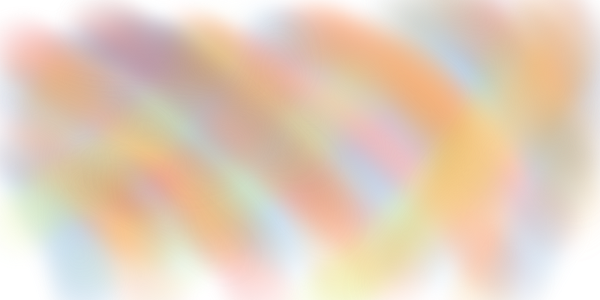
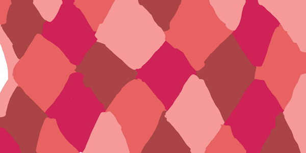
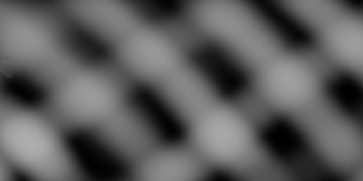

<!--
  Generated template for the StartPage page.

  See http://ionicframework.com/docs/components/#navigation for more info on
  Ionic pages and navigation.
-->
<ion-header>

  <ion-navbar>
    <ion-title>Start Page</ion-title>
  </ion-navbar>

</ion-header>


<ion-content padding>

    <ion-slides pager>
        <ion-slide class="slide-image">
            
          <h2>Image 1 by mIsabel</h2>
          <p>Padrão realizado por Maria Isabel Mosquera</p>
          <p>Esta interssado...<strong>Click aqui</strong></p>
        </ion-slide>
      
        <ion-slide class="slide-image">
            
          <h2>Image 2 by mIsabel</h2>
        </ion-slide>
      
        <ion-slide class="slide-image">
            
          <h2>Image 3 by mIsabel</h2>
          
          <a (click)="goToTabsPage()">Ir Tabs Page</a>
        </ion-slide>
      </ion-slides>

</ion-content>
